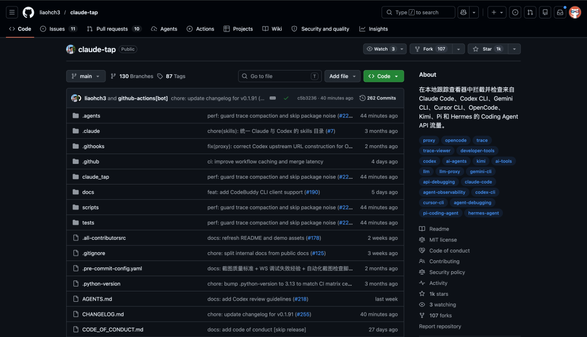
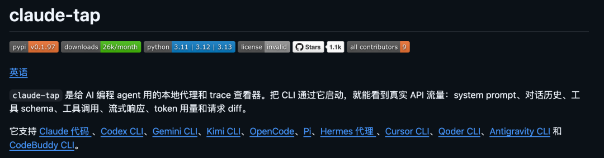
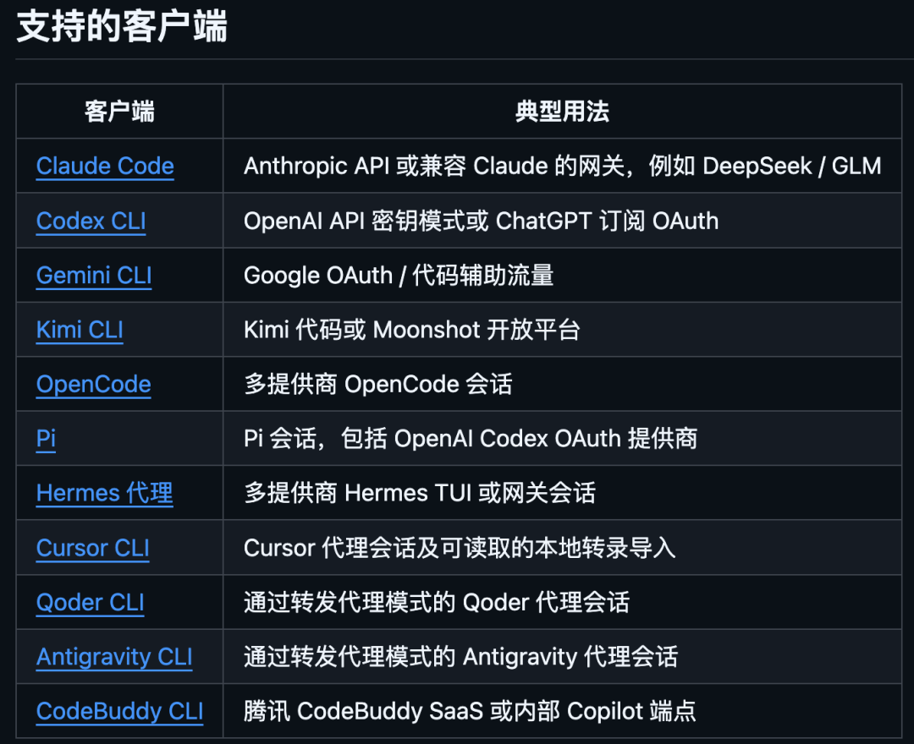
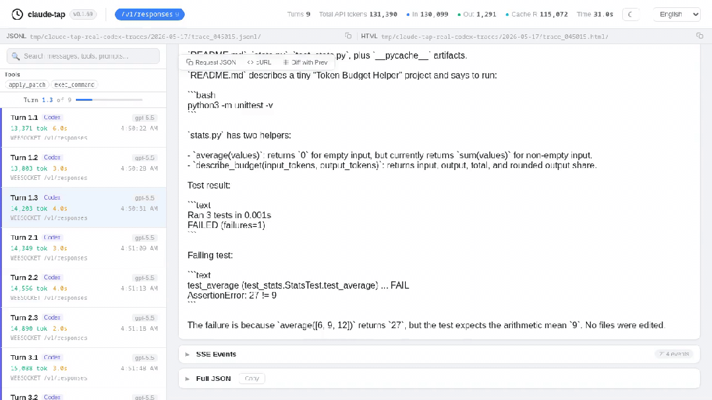
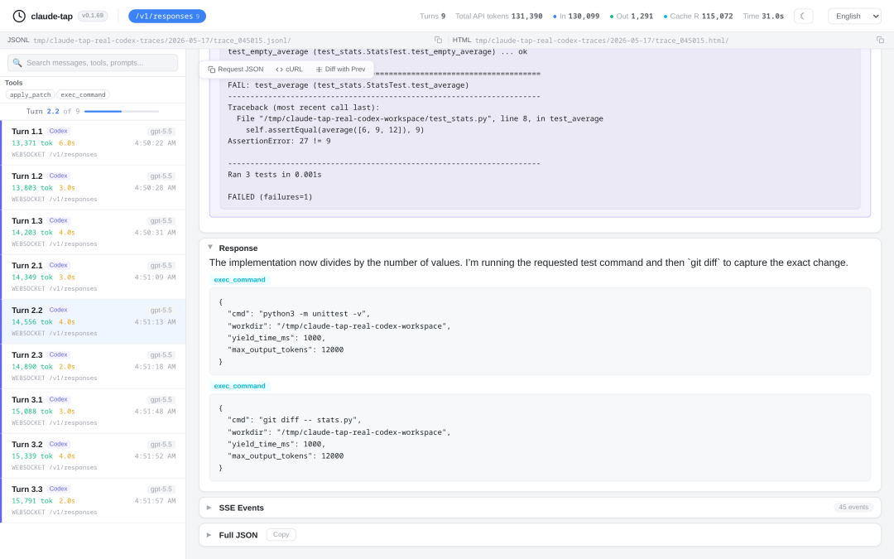
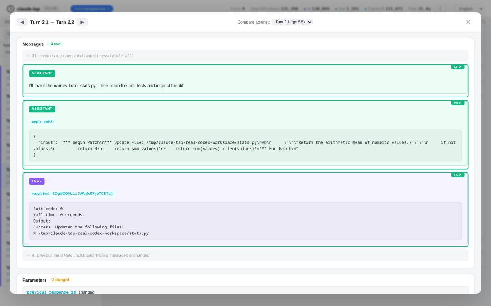
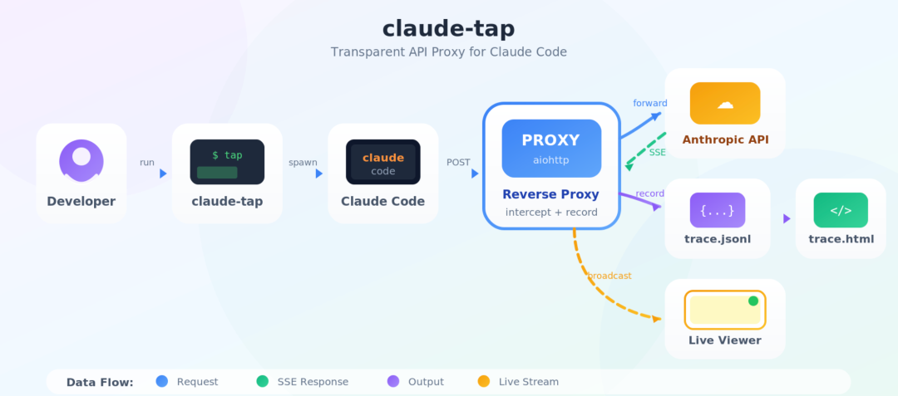

每天用 Claude Code 写代码，一个月下来账单好几百刀。
但你真的知道这些钱都花在哪了吗？
每次请求到底发了多少 token？system prompt 里藏了什么内容？多轮对话的上下文是怎么一步步膨胀的？工具调用又消耗了多少？
这些问题的答案，Agent 工具自己不会告诉你。
最近逛 GitHub 发现一个叫 claude-tap 的项目，帮你偷看 AI Coding Agent 的每一次 API 请求。

用它能了解 Agent 内部工作机制，也能看看你的 Token 都花在哪里了。
01
开源项目简介
claude-tap 是一个本地代理和 Trace 查看器。
说得直白一点，它像一个套在你 AI Agent 外面的中间人，拦截所有 API 流量，然后把每一次请求的细节都记录下来。

system prompt、对话历史、工具定义、流式响应、token 用量，全部可查。
重点是：一行命令就能启动，完全不改你现有的使用习惯。
而且它不挑食。目前支持 9 个主流 AI Coding 客户端：
Claude Code、Codex CLI、Gemini CLI、Kimi CLI、OpenCode、Pi、Hermes Agent、Cursor CLI、Qoder CLI。

市面上叫得上名字的 AI 编程 CLI 基本都覆盖了。

02
它能干什么
看见真实上下文
你发给 AI 的每一句话，AI 看到的 system prompt，工具的参数 schema，流式响应的每一个 chunk：全部都能查看。
是原始的 API 请求和响应，不是 Agent Loop 的那个信息哦。

相邻请求 Diff 对比
这个功能很实用。
多轮对话的时候，你可以直接对比两次请求之间到底变了什么，哪些消息被加进去了，哪些被删掉了，system prompt 哪里改了。
字符级的 diff 高亮，一目了然。

Token 用量分析
输入多少 token，输出多少 token，缓存命中多少，缓存创建多少。
按请求拆开给你看，每一笔账都算得清清楚楚。月底看账单的时候你就知道钱到底花在哪了。
实时查看器
加一个 --tap-live 参数，会自动打开浏览器。
Agent 一边跑，你在浏览器里一边看，实时的。每个 API 调用进来，页面就刷新一条记录。
离线归档
每次运行结束，自动生成一个自包含的 HTML 文件。
这个文件可以离线打开，可以发给同事，丢到团队群里让大家一起 review。不需要装任何东西。
数据全在本地
所有 trace 数据都存在你本机。不需要注册账号，不需要连云端 dashboard。认证 header 在记录之前会自动脱敏，不会把你的 API Key 泄露出去。
03
怎么用
安装就一行命令：
uv tool install claude-tap用 pip 也行：
pip install claude-tap装完直接用。比如你想观察 Claude Code 的 API 请求：
claude-tap就这么简单。后面该干嘛干嘛，用完退出的时候会自动生成一个 HTML 查看器。
想边跑边看？加个参数就行：
claude-tap --tap-live切换到其他客户端也是一行命令的事：
# Codex CLIclaude-tap --tap-client codex# Gemini CLIclaude-tap --tap-client gemini -- -p "hello"# Kimi CLIclaude-tap --tap-client kimi# Cursor CLIclaude-tap --tap-client cursor -- -p --trust --model auto "hello"
不启动客户端，只开代理也行：
claude-tap --tap-no-launch --tap-port 8080想看历史 trace：
claude-tap dashboard上手成本基本为零。装了就能用，用了就能看。
04
原理很简单


claude-tap 的核心思路就两条路：
对于支持自定义 base URL 的工具，比如 Claude Code、Codex CLI，它用反向代理模式：把客户端的请求地址指向本地代理，代理再转发到真实 API。对客户端来说完全透明。
对于不支持改地址的客户端，比如 Gemini CLI、OpenCode、Pi，它用正向代理模式：通过 HTTPS_PROXY 环境变量把流量导到本地，配合自签名的 CA 证书完成 TLS 解密。装好证书之后也是透明的。
所有流量经过代理的时候，会被实时记录成 JSONL 格式的 trace 文件。
实时模式则通过 SSE 把记录推送到浏览器。退出的时候把 trace 打包成自包含 HTML。
就这么简单。没有花里胡哨的东西，就是把流量拦下来、记下来、展示出来。
05
谁适合用
如果你每天都在用 AI Coding Agent 写代码，尤其是 Claude Code 重度用户，这个工具几乎是必装的。
token 烧了多少、花在哪了，心里有数。
如果你在做 prompt 工程，想看完整的 system prompt 和上下文传递链路，用它比自己去翻日志方便一万倍。
如果你在带团队用 AI 写代码，想审计 Agent 的行为、做成本分析、看看 Agent 到底在干什么，这个工具生成的 HTML 文件直接丢群里就行。
如果你自己在做 Agent 相关的开发，想调试 API 调用、排查问题，claude-tap 就相当于 AI Agent 领域的 Wireshark。
开源地址：https://github.com/liaohch3/claude-tap06
点击下方卡片，关注逛逛 GitHub
这个公众号历史发布过很多有趣的开源项目，如果你懒得翻文章一个个找，你直接关注微信公众号：逛逛 GitHub ，后台对话聊天就行了：